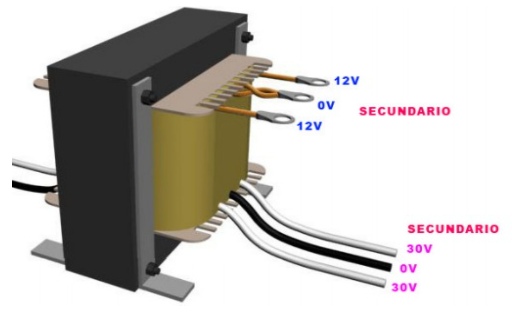
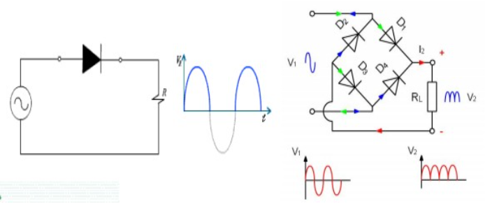
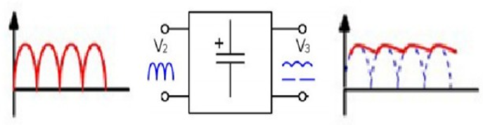

Esta etapa consta básicamente de un transformador que esta formado por un bobinado primario y uno o varios bobinados secundario,
que tiene como función principal convertir la energía eléctrica alterna de la red , en energía alterna de otro nivel de voltaje,
por medio de la acción de un campo magnético. Además provee una aislación galvánica entre la entrada y la salida.

Etapa de rectificación
Esta etapa queda constituida por diodos rectificadores cuya función es de rectificar la señal proveniente del bobinado
secundario del transformador. Existen 2 tipos de configuraciones que son rectificación de media onda y de onda completa

Etapa de filtrado
Esta etapa queda constituida por uno o varios capacitores que se utilizan para eliminar la componente de tensión alterna que
proviene de la etapa de rectificación. Los capacitores se cargan al valor máximo de voltaje entregado por el rectificador y se
descargan lentamente cuando la señal pulsante desaparece, permitiendo lograr una nivel de tensión lo mas continua posible

Etapa de regulacion
Esta etapa consiste del uso de uno o varios circuitos integrados que tienen la funcion de mantener constante las caracteristicas
del sistema y tienen la capacidad de mantener el estado de la salida independientemente de la entrada.
Esta etapa se puede dividir en:
Reguladores lineales y regulador de conmutación (switching) .